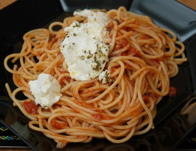

| Zutaten für 4 Personen: | |
| 500g | Spaghetti |
| 1 | Zwiebel |
| 2 | Knoblauchzehen |
| 1 Dose à 800g | ganze Pelati |
| 3 El | roter Balsamico |
| 1/2 Tl | Zucker |
| frischer Basilikum | |
| geriebener Parmesan | |
| 450g | Ricotta |
| Olivenöl | |
| 1 Tl | getrockneter Oregano |
| 2 | frische Chilis |
| Meersalz | |
| Pfeffer aus der Mühle | |
Für den Ricotta den Ofen auf 200°C vorheizen.
Die Chilis entkernen, zerhacken und mit Oregano, Salz, Pfeffer und Olivenöl im Mörser zerstossen.
Den Ricotta in eine kleine Gratinform legen, mit der Paste einreiben und in den Ofen schieben bis der Rest fertig ist.
Für die Spaghetti die Zwiebeln und den Knoblauch hacken und andämpfen. Mit den Pelati 15 Minuten köcheln lassen.
Derweil die Spaghetti im Salzwasser kochen.
Danach die Tomaten mit einem Löffel zerdrücken, Balsamico und Zucker beigeben und umrühren bis sich das ganze zu einer schönen Sauce verbunden hat.
Die Sauce mit den Spaghetti vermischen, mit Salz und Pfeffer abschmecken und Basilikum und Parmesan nach belieben darunter mischen.
Den Ricotta und die Spaghetti getrennt anrichten und beim Servieren einen Löffel voll Ricotta auf die Spaghetti packen.
Im Juli 2008 von Patrick Rüegg erhalten. Angeblich stammt das Rezept von Jamie Oliver.
Gelang am 17.2.2008 sehr gut. Der Ricotta wird so richtig sämig. RE
@LINKBACK_TAG@ @WAKELOCK@